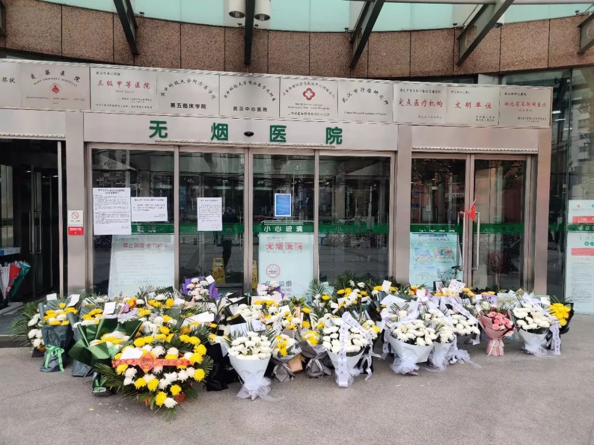
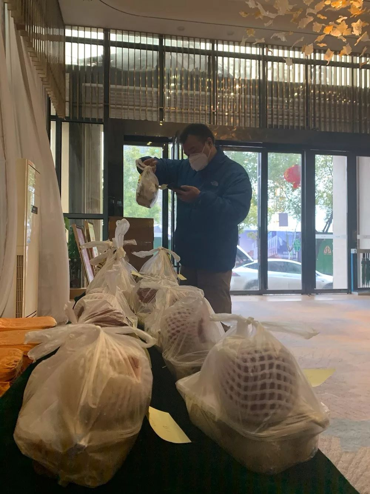
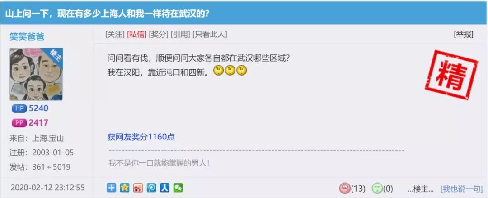
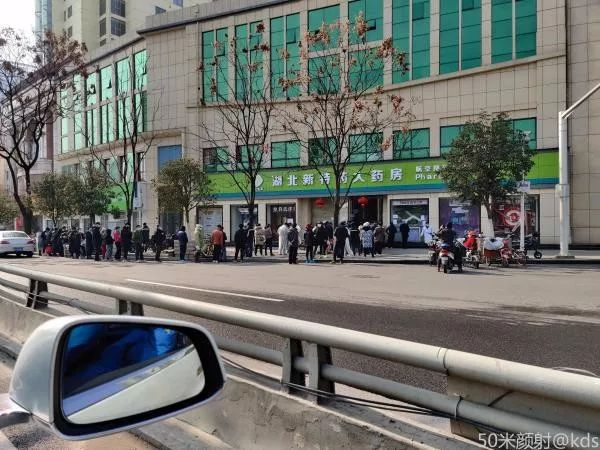

支援武汉一线医生见闻实录：“我们都是一个战壕里的战友”丨疫中人③
原文链接 备份链接 文：蔡星卓 “每个人都在拼尽全力呼吸。” 刚开始是发热和咳嗽，接着是明确的呼吸困难，用赵一波的话说，病毒让肺像肿了一样，进而使肺失去了呼吸的功能。有的病人带着面罩，有的病人带着氧气管，有的病人插着 …
编者按
《口述实录 | 快递小哥搞定金银潭医护难题：我送的不是快递，是救命的人啊！》一文在网上引发关注后，热心读者纷纷给周刊提供线索。其中，一篇发表于宽带山论坛的帖子引起了我们的注意。和快递小哥一样，来自上海的“80后”餐馆老板同样用自己的方式在武汉抗疫一线传递着爱心。昨天（2月16日），在周刊读者、宽带山网友华东政法大学陈波老师的帮助下，记者辗转联系到了帖子的作者，即本篇故事的口述人朱仁。接受采访时，他刚刚完成了当天的送餐工作。
口述 | 朱 仁
整理 | 应 琛
我不知道当初辞职离开上海，到武汉创业的选择对不对，但是这段时间的经历，我觉得自己做了人生中非常正确的一个选择。当我老了之后，我想仍是可以拿出来说道说道的。不是说，我做了多少贡献，至少我给7岁的女儿树立了一个好的榜样。

朱仁昨晚收到的订餐信息，订餐数还在不断增加
每天23点左右，我嫂子就会陆陆续续将第二天医院的订餐信息发给我和厨房的同事。我一般会先数一数订餐量，心里有个底。但因为有些医护人员是半夜回到酒店后才开始订餐，早上起来也有会些订单，所以只要时间允许，我们都会随时加单。
现在算起来，从1月26日开始，我们为医护人员免费提供午餐已经持续了三个星期。
01
老婆的老板让她立刻下车回上海
我今年36岁，是个土生土长的上海人，之前在上海某百年企业旗下的一家香精香料厂上班。
有一个表哥在武汉做生意好多年了，其中包括餐饮。每年春节，表哥一家人都会回上海和我们一起过。席间，也听他提起过日后又拓展店铺的计划。去年春节，我带着家人去武汉旅游，看到了武汉发展变化之快，也去表哥店里吃了饭。回来后，我就在想，我今后的人生轨迹是不是可以有些新的变化。
就这样，2019年7月，我辞职来到武汉跟着表哥一起开新店。表哥当时已经有两家店，一家日式自助餐和一家韩式烤肉。他计划再新开两家。我来了之后，他就让我从零学起，参与了其中一家新店从选址、设计、装修、采购、施工，到招聘、管理等整个过程。
今年1月8日，新店开始试运营，刚开始的营业状况非常鼓舞人心，大家也沉浸在成功的喜悦之中。我没有辜负表哥对我的期望，对自己的未来也充满信心。虽然当时，已经有一些报道和消息传出，但武汉当地人其实并没有很在意。尤其像我在的汉阳区，离华南海鲜市场有20多公里，完全没有病毒来袭的紧迫感。我没有过多关注疫情的消息，还一门心思在钻研春节期间如何使新店正式步入正轨。但不承想，不到两周，由于新冠肺炎疫情，就被迫暂停营业了。

朱仁在协和医院门前的自拍
其间，我和老婆一直没有改变过今年在武汉过春节的计划。1月21日，老婆和女儿乘坐提前一个月“拼老命”抢到的春运高铁票来到武汉。就算汉口火车站离华南海鲜市场很近，路上不戴口罩，扎堆的人比比皆是。
相反，老婆公司的老板倒是非常警觉。他给老婆打了个电话，让她马上下车，买票回上海。可当时列车已经驶过安徽，老婆回答：“我们坐的是高铁，不是地铁，下一站就到武汉了。”
老婆到的当天晚上，我们一家人还在饭店里聚餐，没有感到周围有太大的波澜。饭店内仍然人头攒动。第二天，我还带着老婆孩子去市中心的商场转了转，计划过年期间再带他们好好在武汉玩一下。
02
开始送餐，在网上看到医护人员每天吃泡面
但也就是在1月22日，武汉市政府发布了疫情通告，武汉的几家最大的商场和超市全部关门了。我们本想预定年夜饭的，也被饭店告知不营业了。汉口的国广、武广，武昌的汉街等全部在中午接到闭店通知，什么时候开门另行通知。这是什么概念，相当于上海的南京路步行街和淮海路关闭了，这个时候隐约感觉事情有点不对劲了。
随即，本来想在过年期间大干一场的我和表哥商量下来先放3天假看看形势。
1月23日，老婆一起床看手机就跟我说武汉封城了。我一开始还不信，结果一看手机，是真的。凌晨2点发布的消息，上午10点出城的高速也全部关了。这个时候，我才感觉事情真的很严重。
当天，家附近的超市基本被清空了，所有的速冻食品、方便食品、绿叶菜、肉类等统统抢光。幸好，我表哥下午开车带着我去了另外两家大卖场，才把食品采购齐全了，买了一些生活必需品和食品。表哥还给了我一箱3M口罩、一瓶酒精、一堆药品：板蓝根、莲花清、抗生素等。
大概也是我们俩夫妻心大，既然出不去，那就在武汉驻守。日子总要过的，大年夜我们吃了火锅，还包了饺子。

朱仁一家的年夜饭
年初一，老婆孩子在家看看电视，各种视频拜年。表哥开车接我去了店里开个员工会，准备商量一下接下来的打算。
所有人到齐后，各路信息汇总，表哥说现在疫情严重，预计放假7天再看，别人什么时候开业我们就什么时候开。我们有一家店是武汉最大的日料放题店，春节期间原本备了很多货，表哥提议，医护人员奋战在一线，每天却只能吃饼干泡面，我们有食材，有留守的人员，不如联系一下医院，可以给医护人员送爱心餐，尽我们一份绵薄之力。
说干就干。我们先是联系了供货商，然后又去食药监局报了备，拿到了车辆通行许可。

食药监检查监督意见书
但最麻烦的是，我们是做自助餐的，平时并没有外卖盒。当天下午，我嫂子的弟弟跑了好几个市场，电话打了3个多小时，才在一家没能在封城前回家过年商户的仓库里找到了3000个打包盒，等于清空了他的库存。
当晚我们就做了送餐海报通过饭店的公众号推送。没想到过了两个小时，就有医生加了微信订餐。接着，发来订餐的医院越来越多。


医生的订餐信息
经过筛选，我们只选择在三家店周边区域的几家大医院进行送餐，一是因为只有两辆车参与送餐，忙不过来，二是所有送的餐都是现炒出来的，要保证一个小时全部送到位。两辆车分成汉口和汉阳两片区域，各派一辆车送。
武汉的同济、协和、中心医院、新华医院、金银潭医院，还有第五人民医院这些最早定点收治新冠肺炎病人的医院，都在我们的送餐范围之内。
第二天，我就开始了直到现在仍在继续的送餐生涯。
03
我只是送个餐，护士却数次对我90度鞠躬
送餐的第一天就发生了让人后怕的一幕。
第一天接单的晚上，有一个自称是武汉金银潭医院的医生发消息来问：“一客饭，你们送不送？”对方说如果不送也没关系。想到金银潭医院是第一批收治新冠肺炎病人的医院，医生一定很辛苦，我们最终还是答应了他的请求。
送餐时，表哥由于找不到接头人，居然直接只戴着一个口罩，就捧着炒饭走进了病房区。看到周围都是身穿防护服的医生，表哥就发觉苗头不对，想要撤。但对方这时告知他，自己是已经被隔离的医生出不去，希望表哥把饭放在病房门口的护士台。既然答应了送餐，表哥也只有硬着头皮往里送了。

送餐至新华医院民航分院
送完之后，表哥再三叮嘱我，以后千万不能进医院大楼，只允许送到外面，并让我每次一定要做好充分的防护措施，口罩和护目镜必须戴着，消毒水也要随身带。
某天接头的护士很早便在医院门口等着我，从看到我从车上下来，到把饭端到她手上，再到我转身上车，她全程不停地90度深鞠躬致谢。当时，我还在想，我就送点炒饭，不至于这么客气。

送餐至协和医院
后来表哥跟我说，这些武汉本地的医生在前期的疫情爆发的阶段实在太累太辛苦，一天都吃不上一顿饭，已经吃了一个多星期的泡面了，能吃到这些米饭对他们来说简直就是珍馐美味了。

医生的订餐信息透露已经吃了两个星期泡面
在医院里，我们还碰到过上海来的医生。据他说，这边的条件确实不太行，人少、设备少，病人还多。在上海，可以做到4个小时一个轮班，这样即便全身防护服不吃不喝不拉，4个小时还能扛一下；但他们没来支援之前，这边的医护人员往往是8个小时一个轮班，有的甚至12小时。12个小时不吃不喝不拉，谁吃得消！但是没办法，病人太多。
再联想到之前鞠躬的护士，我觉得整个人像被打了一拳一样。以前送餐，对我来说更像是完成表哥交代的任务，但当时我就对自己说，只要我们有条件、有能力，就一定要给这些医护人员送最美味的饭菜，食材都挑贵的来，菜品也要更丰富一些。

协和医生用餐合影
我们应该说是武汉市最早一批给医护送餐的志愿者了。大约过了5天，各个供应商看到我们的行动后纷纷表示愿意支援。他们开始捐助物资和食材给我们——有人送了两吨大米，有人送来了三文鱼，有人送来了鲍鱼，还有人来送了四季豆、青椒等蔬菜。

接收捐赠的大米
有了这么多援助，我们就开始送豪华炒饭了，除了鳗鱼盖饭、肥牛盖饭之外，我们还会做三文鱼炒饭加鲍鱼。

鲍鱼肥牛饭
有些医护人员问能不能送汤，我们就用乌骨鸡炖鸡汤；有的医生提出，可不可以有酸奶，我们就去超市买当天最新鲜的；还有一个护士说生日，问我们能不能送个蛋糕，我跑了很多家店都说没有，最后给她送去了一盒巧克力……

一份特殊的生日礼物
在元宵节当天，我们还特意从卖场买了汤圆，每份饭都会再送一盒汤圆。有段时间，有供应商送来很多苹果，每份饭也会配一个苹果。

元宵节送汤圆
总之，医护们提出的要求，能满足的我们尽量都满足，为的就是让他们吃得好一点。

医生的感谢
我们在医护圈里也有了不错的口碑，有些比较远的医院也会找我们订餐，但因为运力有限，实在送不了。他们也表示理解，有时会派人到我们店里来取餐。

医生到极上馆大众点评的留言
每天我们都会收到医生护士发来的感谢。有的医生还送了护目镜和手套给我们。他们还会自发在朋友圈，在大众点评为我们打广告。

极上馆炒饭备餐
但这个时候，这些都不重要了。你们守护病人，我们守护你们。
04
女儿发烧，我一下子慌了
送餐期间，还发生过一段小插曲。7岁的女儿出现发烧，一度烧到39.4度，还伴有整夜干咳、没胃口，以及呕吐的症状。我觉得，99%符合新冠肺炎的症状了。
直到这个时候，我才真正感到害怕。老婆也吓坏了，一度还责怪我是不是因为去医院送餐把病毒带了回来。
我极力保持冷静——每次送餐我都做足了防护，交接完后立即消毒，车子也喷洒消毒液，回家后也是马上对外衣、鞋子进行消毒。所以，应该不会是我。
安抚好了老婆，我们决定暂时不去医院，因为知道由于交叉感染，大量的人因此得病。再说，如果小孩确诊，我们两个大人也逃不掉，紧接着表哥，表哥家人，店里所有人全部要隔离。这样的牵扯面太大了，所以我们没敢跟任何人说这个情况，让女儿在家观察。只是打电话回上海，我妈和阿姨都是医务工作者，对基础护理还是有所了解的，听了他们的意见，先给女儿服用了一些退烧药，然后每天测量两次体温，规定她必须喝1.5升热水。如果一旦出现病情加重的情况就立即送医院救治。
在连续发了3天的烧之后，终于逐步退烧了，咳嗽也有所好转。女儿开始有鼻涕流出，也能咳出痰液。这个时候悬着的心一下子掉下来了，就是普通发烧感冒。

女儿笑笑的画：武汉加油
这三天里，老婆天天抱着女儿流泪，女儿也通过新闻对这个病毒有点了解。小家伙也怕死，每次给她量体温，一旦出现37度以上，她就说这个温度计不准的。明明听到她干咳，她还会说我是有痰的，只是咽下去了。这让我既好笑，又心酸。
经过一周的恢复，女儿又活蹦乱跳的。我感觉自己就像从鬼门关里转了一圈回来了，担心她比担心自己每天去医院送餐，还要多得多。

武汉中心医院门口至今仍有人为纪念李文亮医生送来鲜花
但现在回想起来，我当初这个决定也是有些不负责任的。期间，表哥还是在给医护人员送餐。所幸女儿是虚惊一场。不然，后果可能更严重。
05
现在我们最缺的是外卖盒
送餐的事，我家里人倒是一直挺支持的，不论是身边的老婆和女儿，还是在上海的父母等。倒是表哥的妈妈，也就是我姑妈，至今仍还瞒着她。表哥也是怕她担心，每次通电话，都说就在家待着，或着在店里看看。

朱仁仔细核对送餐数量
现在，我们从原来的500多份饭降到了两三百份，不是我们不想送。而是有两家店的员工宿舍所在的小区，出现了确诊病例。整个小区都被隔离了，没有厨师。现在只剩下一家店的员工在。还有一个原因是，原本我嫂子弟弟的车也没了，因为他家小区也因为同样的原因全部被封了，连车库都封了。

中西医结合医院接收函
好在随着疫情防控的发展，全国各地的援助力量也多了起来。送餐的队伍也多了起来。医护人员的吃饭问题还是可以保障的。
目前，我们遇到比较大的问题是储备的外卖盒不多了，大概还能撑一周左右。我们也在积极联系方方面面看看能不能找到供应商。另外，一些食材已经用完了，也比较难找。所以，我们目前都改成了盖饭，肥牛和鳗鱼两种，接下去可能鳗鱼也会告急。
我现在的生活还是很充实和规律的——每天10点出门，到店里帮忙打包、清点数量，再送餐。完了之后，回几家店看一下，做好清洁；再跟员工联系一下，问问有没有有生病的。基本上，每天下午四点左右到家。

2月12日，作为一个17年的资深TF，我把我的经历写在了KDS宽带山论坛上。本来只想问问，有没有和我一样在武汉的上海人，问问他们过得怎么样。没想到，当我先开始讲了自己的经历后，一下子引来很多人留言。

KDS网友在牛岛大众点评的留言
你可以看到，大家都还是很关心武汉的真实状况的，所以我每天到家后，也会上网给他们说说见闻。
收到的回复都是挺正能量的。现在的武汉，基本生活都是可以保障的，我也让他们不用担心。

武汉这边口罩、酒精、消毒水依旧紧缺，药店排队买口罩
我相信疫情很快就会过去，在这之前一定会在能力范围内坚持给他们提供最好的饭菜，让他们有体力在一线战斗。
文中配图均有受访人提供

征集令
《新民周刊》现面向全国征集新冠肺炎采访对象和真实故事：
如果你是参与抗击新冠肺炎疫情的医护人员或其家属，我们希望聆听你的“战疫”故事，也希望传达你的诉求。
如果你是确诊、疑似患者本人或家属，我们希望了解你和家人如何“抗疫”的过程，让外界了解你的真实经历。
如果你是疫情严重地区的普通市民，我们希望展现你的乐观，并倾听你所需的帮助。
如果你是公共服务人员或各类捐助者，我们希望看到你的“最美逆行”，记录下你的无私。
……
抗击新冠肺炎疫情，我们诚征对疫情了解的社会各界人士，提供相关线索，说出你的故事，让我们用新闻留存这一切。
《新民周刊》新冠肺炎线索征集值班编辑联系方式（添加时请简要自我介绍）：
周一：应 琛 微信号：paulineying0127
周二：金 姬 微信号：gepetta
周三：黄 祺 微信号：shewen-2020
周四：周 洁 微信号：asyouasyou
周五：孔冰欣 微信号：kbx875055141
周六：吴 雪 微信号：shyshine1105
周日：姜浩峰 微信号：jianggeladandong
✳如你需要捐赠物资，可与以下两位工作人员联系:王勇：WangYong-SH 吴轶君：rommy150708（添加时请注明“捐物资”，方便工作人员快速通过您的申请，谢谢。）
新闻是历史的底稿，你们是历史的见证者。期待你的故事、你的线索！

▼
大家还都在看这些
▼
转载请在评论区留言，获得授权！
转载时，须注明作者、出处和微信号


原文链接 备份链接 文：蔡星卓 “每个人都在拼尽全力呼吸。” 刚开始是发热和咳嗽，接着是明确的呼吸困难，用赵一波的话说，病毒让肺像肿了一样，进而使肺失去了呼吸的功能。有的病人带着面罩，有的病人带着氧气管，有的病人插着 …
原文链接 备份链接 二月初七（2月29日）。 天又晴了。阴阴晴晴，有点像我的封城日记，开开封封。待在家里时间长了，不知以后出去还习惯否。甚至，还愿意出去否。今天邻居唐小禾老师发了一组东湖的照片，像是无人机所拍，说是近日的。空旷而寂静的东 …
原文链接 备份链接 各方资源和关注的焦点是武汉，但在周边16座也因疫情而被封闭的城市里，他们正在经历着什么 文 |《财经》记者 房宫一柳 宋玮 黎诗韵 管艺雯 陈晶 余洋洋 实习生 马可欣 张凡 编辑 | 宋玮 1月24日，农历鼠年除夕 …
原文链接 备份链接 受到武汉新发布限行令的影响，也出于对车主健康的担忧，善缘车队停止接送医护人员。26日上午，在一些武汉本地的互助群里，提供免费住宿或为医生送餐的武汉市民们还在热议：目前我们还没收到通知，是不是还可以自发去接送医生？ 本 …
原文链接 备份链接 沈杰把为医务人员理发的短视频上传到社交网络，获得了两种意料之外的回应：一种说他“胆子大”，“这种时候还敢到医院去”，另外一种，则是更多医务人员请他帮忙。 对他而言，自己只是偶然接到了一个医生的电话，了解对方困境后没犹 …